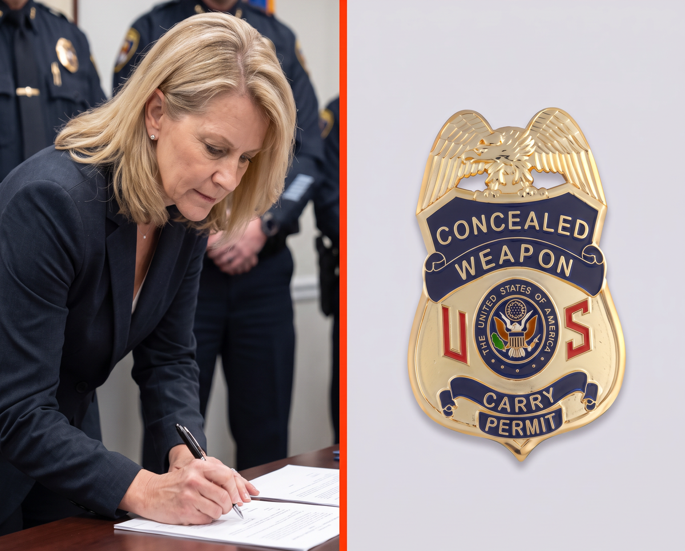

See what your state requires for a concealed carry permit, how to apply directly with your issuing authority, and how private application-assistance services work if you prefer guided help.
Choose your state to see the issuing authority, typical requirements, and a link to the official application page.
Requirements and fees are set by each state and can change. Always confirm with your issuing authority.
Apply with your state or county authority using the official link above. You pay only the state fees.
Rush Permit, operated by 713online, LLC (Miami, FL), offers guided help preparing your application for a fee. It is a private company and is not affiliated with any government agency. It does not issue permits or decide approvals.
Step 1. Check whether the service supports your state.
Step 2. Complete their questionnaire.
Step 3. Receive help preparing your documents.
Step 4. Submit your application to your state or county authority, which makes the final decision.
No. getccwpermitseasy.com is an independent publisher operated by Lerpy Turkey LLC. We publish consumer guides about concealed carry permit requirements. We are not a government agency and are not affiliated with any state or county.
No. You can apply directly with your state or county using the official link in the state requirements section above. A private assistance service is optional — useful only if you want guided help preparing your paperwork.
No. Rush Permit is a private company operated by 713online, LLC. It does not issue permits and does not decide approvals. Only your state or county authority issues permits and makes the final decision.
Processing times are set by your issuing authority and vary by state. We do not control approval timelines. Always check the published times on your state’s official page.
Yes. We may receive a commission from 713online, LLC when you use their Rush Permit service. This does not change the price you pay, and it does not affect your ability to apply directly with your state for free (aside from official state fees).